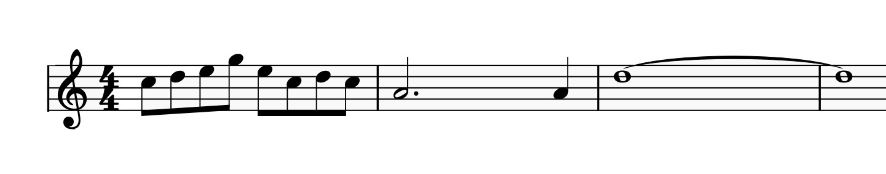
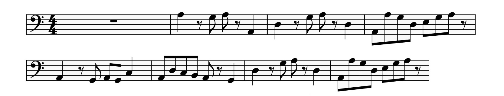
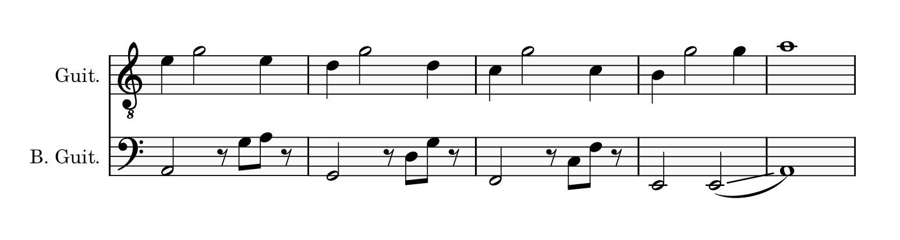

An Analysis of Oghneya - Ferkat Al Ard
Posted On 8/2/2013 By Ryan P.
This article is far from complete, as this song is a bit lengthy and has quite a bit going on!
All I wish was that I had discovered Oghneya by Ferkat Al Ard, and the record label Habibi Funk sooner! To give a bit of a background, Ferkat Al Ard was a band founded by the Lebanese musician, Issam Hajali, in 1977. [1] The song Oghneya is found in their album of the same name which originally came out in 1978. In 2019, the record label Habibi Funk managed to talk to Issam Hajali, and re-release a number of their work, inlcuding this album. [2]
Before continuing on to reading, listen to the song on YouTube here. I don't think I can truly give this song justice.
Regarding the composition of the song, Oghneya definitely feels like it would fit quite nicely with other progressive rock tracks, having diverse influences, particularly in jazz, a bit of psychedeleic rock. The song is sung in Arabic, and I would love to be able to take a look at the lyrics too, but unfortunately I haven't found a translated lyrics yet.
The key of the song appears to be in A-minor and the time signature, that I have determined best is 4-4 time. Additionally, I have been able to annotate it so far, at 120 bpm. The song, as far as I've heard, begins with an A minor ADD 9 chord, and then we get the following riff, played on a plucked stringed instrument. I think it's a guitar, so I used that as my basis:
On the bass guitar, I heard the following. Note that the above guitar riff plays twice, starting the riff again as soon as the sustain ends:
I believe that the bass's variety, gives the intro an added layer of movement, particularly as the bass helps to fill and give motion during the guitarists sustain notes.
Now, the ending of the intro, is shown below, with the guitar and bass shown together:
